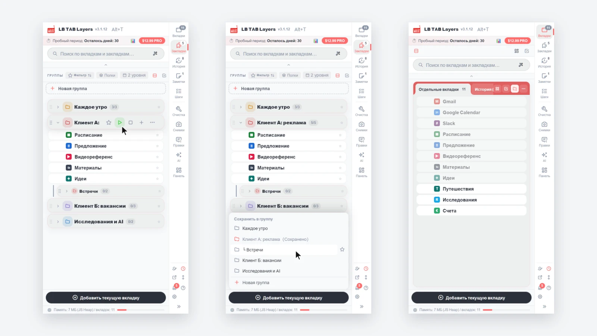
Нажмите Alt+T (на Mac — Option+T), чтобы открыть LB TAB Layers. Для начала достаточно запомнить три вещи: кнопка «Добавить текущую вкладку» сохраняет вкладку, на которой вы сейчас находитесь, ▶ открывает всю группу целиком, а ■ снова её закрывает. Всё сохранённое хранится в закладках Chrome, поэтому никуда не денется, даже если вы закроете вкладки или перезапустите Chrome.
Спасибо, что установили LB TAB Layers. На этой странице — только то, что понадобится в первые пять минут.
Идея простая. Вкладки — это «сейчас»: то, над чем вы работаете в данный момент. Закладки — это «потом»: то, к чему вы ещё вернётесь. История за сегодня — это «журнал» того, что вы уже смотрели. В LB TAB Layers всё это собрано в одной боковой панели, и переключаться между ними можно одним щелчком.
💡 Нажмите Alt+T (на Mac — Option+T), и панель откроется в любой момент. Можно также щёлкнуть по значку LB TAB Layers на панели инструментов. Если значка не видно, нажмите на значок расширений (деталь пазла) и закрепите LB TAB Layers.
Сначала перенесите свои закладки в TAB Layers (рекомендуется)
Если в Chrome у вас уже есть папки с закладками, быстрее всего начать так: сначала перенести их в TAB Layers. Новые группы создавать не придётся: ваши папки превратятся в группы по проектам или темам и выстроятся на боковой панели.
Нажмите «Начать со своих закладок (рекомендуется)»
Этот пункт находится в самом верху экрана приветствия, который появляется сразу после установки. Позже его можно открыть через «Настройки» → «Данные» → «Закладки» или кнопкой «Импорт закладок» вверху полноэкранной панели управления.
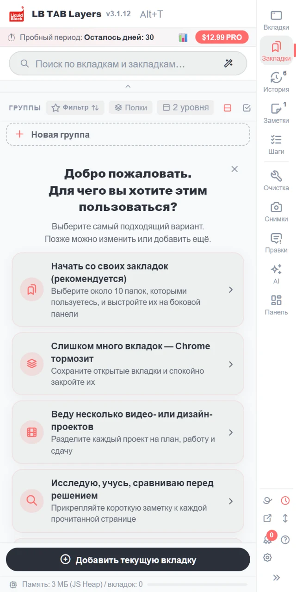
Выберите папки, которыми пользуетесь чаще всего (для начала около 10)
На экране появится список ваших папок с закладками Chrome. Отметьте те, которыми часто пользуетесь. Счётчик вида «3 / 10» показывает, сколько папок уже выбрано. Выбирать все необязательно: заодно это хороший повод подумать, какие закладки вам действительно нужны.
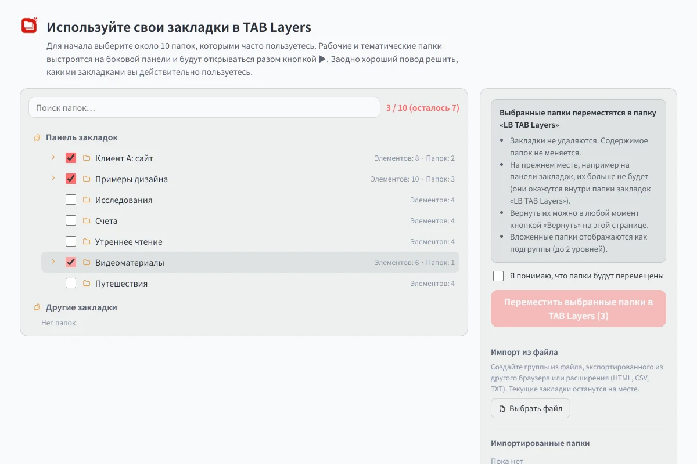
Поставьте флажок «Я понимаю, что папки будут перемещены» и переместите папки
Папки переедут в папку «LB TAB Layers» в закладках Chrome. Ничего не удаляется, содержимое остаётся прежним. На старом месте (например, на панели закладок) их больше не будет, но вернуть их можно в любой момент кнопкой «Вернуть» на той же странице.
Папки появятся на боковой панели как группы
Каждая папка становится группой, а вложенные в неё папки — подгруппами. Нажмите ▶ у группы, чтобы открыть все её страницы сразу.
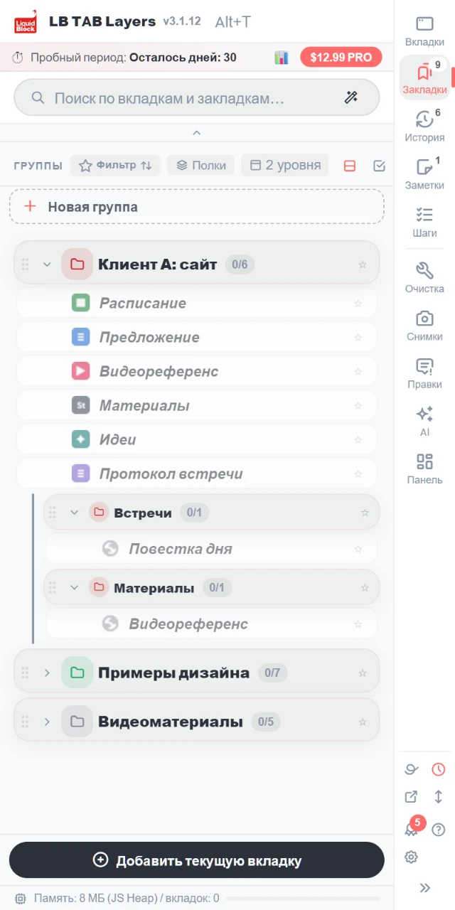
1. Как устроен экран
Вдоль края панели идёт столбец кнопок: «Вкладки», «Закладки», «История», «Заметки» и «Шаги». Нажмите на любую из них, чтобы перейти в этот раздел. Маленькие цифры показывают, например, сколько вкладок открыто и сколько у вас групп.
- «Вкладки» — вкладки, которые открыты прямо сейчас и пока нигде не сохранены
- «Закладки» — сохранённые вкладки, собранные в группы: одна группа на проект
- «История» — страницы, которые вы открывали сегодня, в том числе несохранённые
- «Заметки» и «Шаги» — рабочие заметки и чек-листы, которые выполняются шаг за шагом
Под разделительной линией находятся инструменты. В первый день они вам не понадобятся.
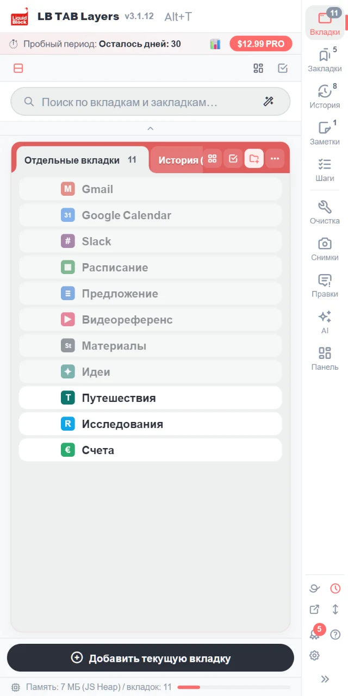
2. Основы
Создайте группу
В разделе «Закладки» нажмите «+ Новая группа» вверху списка. Назовите группу по задаче, например «Клиент В: сайт» или «Каждое утро». Удобнее всего работает правило «один проект — одна группа».
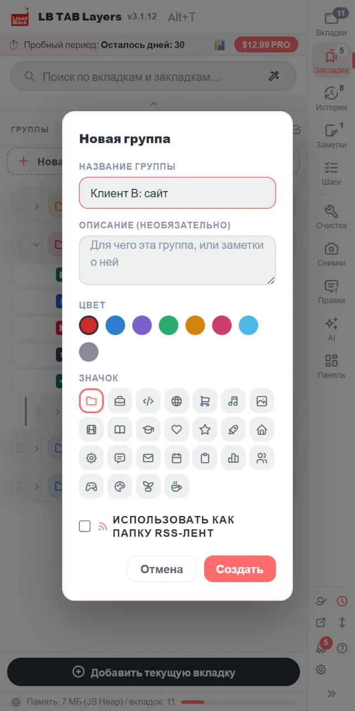
Сохраните текущую вкладку
Нажмите кнопку «Добавить текущую вкладку» внизу панели и выберите группу. Группы, в которых эта страница уже есть, отмечены надписью «Сохранено».
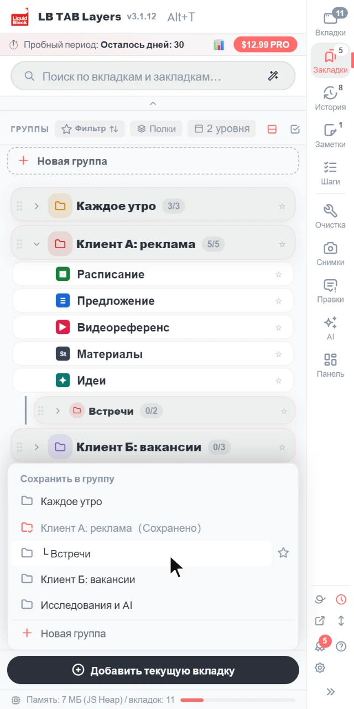
Сохраните сразу несколько открытых вкладок
В разделе «Вкладки» нажмите на кружок слева от вкладки — включится режим выбора. Отметьте кружки у остальных нужных вкладок, затем нажмите кнопку «В группу» внизу и выберите группу. Вкладки можно и перетаскивать в группу по одной.
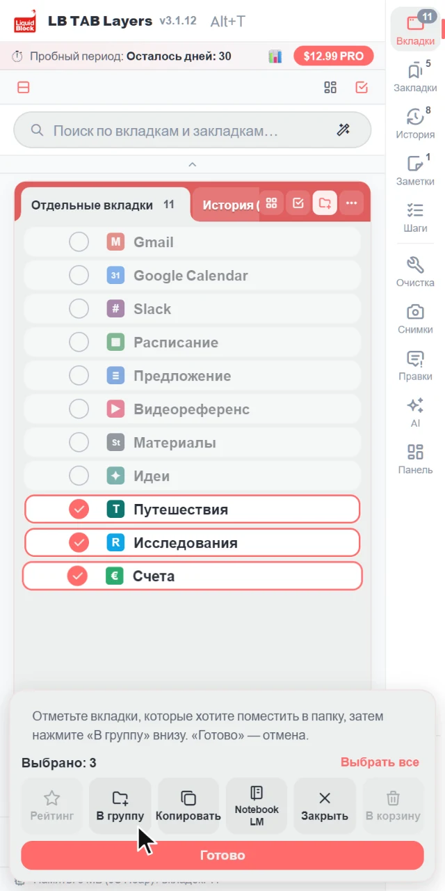
▶ открывает всё, ■ закрывает всё
Наведите курсор на группу и нажмите ▶, чтобы открыть все её вкладки. Они откроются вместе как группа вкладок Chrome с тем же названием и цветом, что и у вашей группы. Когда закончите, нажмите ■ — вся группа вкладок закроется разом. Сохранённые вкладки при этом никуда не пропадут.
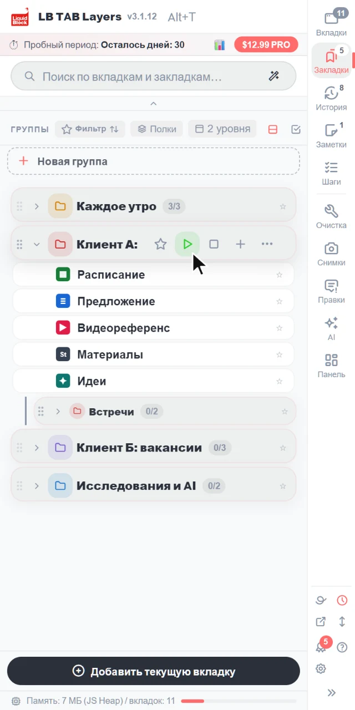
Поиск
Начните вводить текст в строке поиска вверху: поиск идёт сразу по открытым вкладкам, сохранённым вкладкам и истории за сегодня. Небольшие опечатки не помешают.
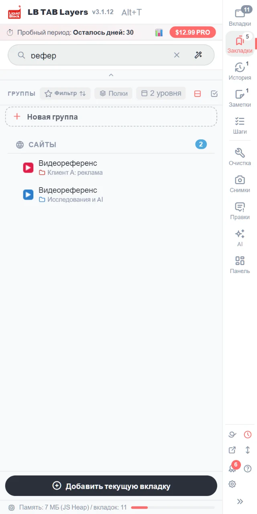
3. Простой способ держать работу в порядке
Один проект — одна группа
Представьте, что группа — это рабочий стол для одной задачи. На этом можно построить весь день:
- Утром — нажмите ▶ у сегодняшнего проекта и продолжайте с того места, где остановились
- Когда переключаетесь на другую задачу — закройте текущий проект кнопкой ■ и откройте следующий кнопкой ▶
- В конце дня — просто нажмите ■. Завтра ▶ вернёт всё на место
Сайты на каждый день — на панель закрепления
Сайты, которые вы открываете каждый день (например, почту или календарь), удобно держать под рукой: щёлкните правой кнопкой мыши по вкладке или закладке и выберите «Добавить на панель закрепления». Они появятся в виде маленьких значков вверху панели и будут открываться одним щелчком (до 12 штук). Их можно и просто перетащить туда.
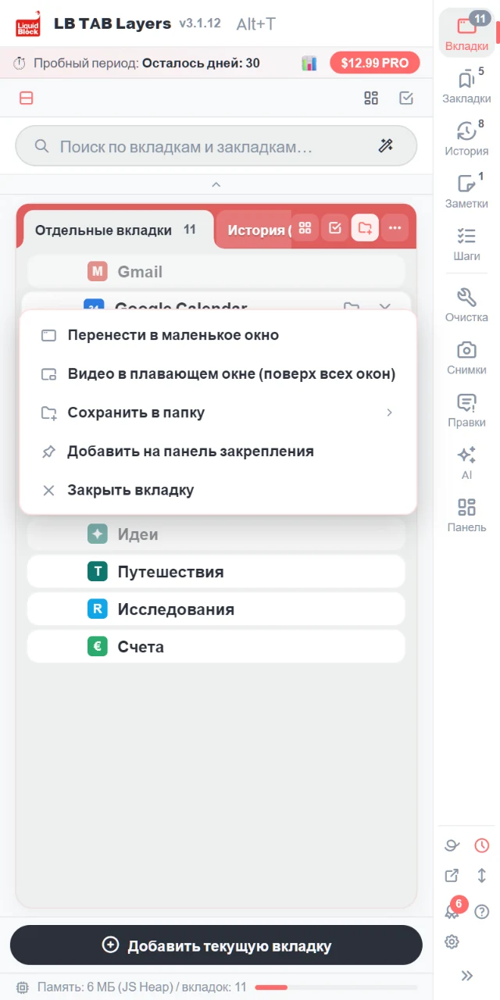
Отдельное окно для каждого проекта
Щёлкните правой кнопкой мыши по группе и выберите «Открыть в новом окне» — она откроется как группа вкладок в отдельном окне. Это удобно, когда вы ведёте два дела параллельно или работаете на втором мониторе.
Забыли что-то сохранить? Это есть в истории за сегодня
Сохранять всё подряд не нужно. Несохранённые страницы остаются в разделе «История» — в том порядке, в котором вы открывали их сегодня. Важное сохраните в группу, остальное закройте — обычно этого достаточно.
🔒 Всё, что вы сохраняете, хранится в закладках Chrome. Сохранённые вкладки остаются на месте, даже если вы закроете их или перезапустите Chrome, а LB TAB Layers никуда не отправляет ваши закладки. Данные, которые хранятся внутри расширения (например, заметки), можно экспортировать в разделе «Настройки».
Ещё десять действий показаны в руководстве (на английском).
Частые вопросы
Q. Как открыть LB TAB Layers?
Нажмите Alt+T на клавиатуре (на Mac — Option+T). Можно также щёлкнуть по значку LB TAB Layers на панели инструментов.
Q. Если удалить расширение, сохранённые вкладки пропадут?
Нет. Сохранённые вкладки остаются в закладках Chrome — в папках с теми же названиями, что и у ваших групп. Данные, которые хранятся внутри расширения (например, заметки), удаляются, поэтому заранее экспортируйте их в разделе «Настройки».
Q. Где ищет строка поиска?
Сразу везде: в открытых вкладках, во вкладках, сохранённых в группах, и в истории за сегодня.
Q. Это бесплатно?
Да. В бесплатной версии можно создать до 5 групп. История за сегодня, «Шаги», панель управления и AI-поиск — функции PRO. В течение 30 дней после установки доступны все функции.
Начните с одного проекта.
Откройте панель клавишами Alt+T, сохраните текущую вкладку, открывайте группу кнопкой ▶ и закрывайте кнопкой ■. Аккаунт не нужен · Всё хранится в закладках Chrome · Все функции бесплатно на 30 дней
Установить в Chrome бесплатно →